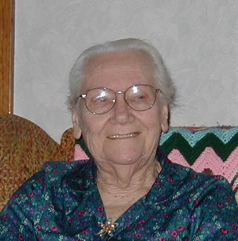
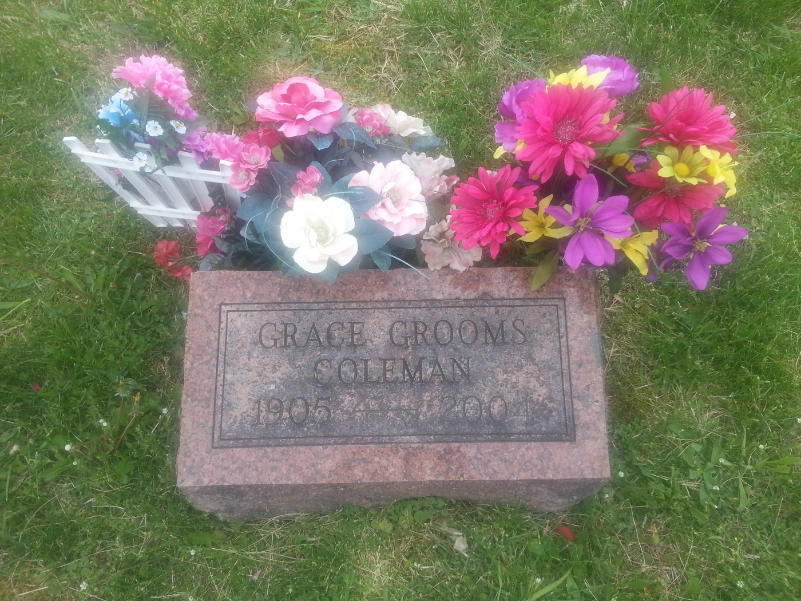

Grace Evelyn (Smith) Grooms Coleman
14 April 1905 – 28 December 2004
Quick Facts
Immediate Family
Parents
- Charles Benton Smith (1869–1940)
- Ora Ellen (Powell) Smith (1876–1973)
Spouses
- James Thomas Grooms (3 March 1878–18 May 1951) — first husband; memorial reports 1924 marriage
- Frank Coleman — second husband, named in obituary; marriage date not stated
Children
- Lenora Lovene (Grooms) Waulk (4 February 1936–18 May 2013)
- Vernon Charles Grooms (1930–1945)
Siblings
- Find a Grave lists Tanna Smith Osborne (1897–1976), Jesse Benton Smith (1899–1982), Addie Bell Smith Hoover (1903–1986), Dora Olive Smith Hawes (1908–1982), Ollie Otis Smith (1910–1992), Okie Faye Shoemaker (1913–1984), and Ora Edison Smith (1916–1990) as siblings. These memorial-linked sibling identities have not been independently verified in this pass.
On Family Tree Sites
Couple Folder
Life Timeline
14 Apr 1905 · Born in Adams County, Ohio, to Charles and Ora (Powell) Smith, per obituary.
1924 · Find a Grave memorial reports marriage to James Thomas Grooms; original marriage record not reviewed.
1930 · Son Vernon Charles Grooms born; died in 1945, per obituary/memorial.
4 Feb 1936 · Daughter Lenora Lovene Grooms born; her obituary identifies Grace as her mother.
1951 · First husband James Thomas Grooms died, per Grace obituary.
1970 · Second husband Frank Coleman died, per Grace obituary; marriage date is not stated.
28 Dec 2004 · Died in Hamilton and was buried at Dunkard Ridge Cemetery, per funeral-home obituary.
Life Story
Grace Evelyn Smith was born in Adams County, Ohio, on 14 April 1905, daughter of Charles and Ora (Powell) Smith, according to her funeral-home obituary. Lenora’s 2013 obituary names her mother as Grace Evelyn (Smith) Grooms Coleman.
Grace’s obituary reports that she was first married to James Thomas Grooms, who died in 1951, and later married Frank Coleman, who died in 1970. It names one daughter and son-in-law, Lovene and Paul Waulk, and says son Vernon Grooms preceded her in death. Find a Grave links James and Grace as spouses and lists Lenora as their daughter.
Grace died at her residence in Hamilton, Butler County, Ohio, on 28 December 2004, aged 99, and was buried in Dunkard Ridge Cemetery, according to the funeral-home obituary and memorial. The Find a Grave portrait and marker images were reviewed; the marker reads “Grace Grooms Coleman 1905–2004.”
Photographs & Family Gallery


Sources & Records
- Grace Evelyn Coleman obituary, Thompson Funeral Homes — Official funeral-home obituary gives birth/death, Adams County birthplace, parents Charles and Ora Powell Smith, first husband James Grooms (d. 1951), second husband Frank Coleman (d. 1970), daughter Lovene and son-in-law Paul Waulk, son Vernon, church and burial.
- Lenora Lovene Waulk, Journal-News obituary, 22 May 2013 — Names Lenora’s parents as J. T. Grooms and Grace Evelyn (Smith) Grooms Coleman; says she married David Paul Waulk and had children.
- Grace Evelyn Smith/Grooms Coleman, Find a Grave memorial 110805610 — Reports dates/burial and reproduces the obituary; links James as spouse and Lenora and Vernon as children; family members are memorial-reported.
- James Thomas Grooms, Find a Grave memorial 112958349 — Links Grace as spouse (married 1924) and Lenora and Vernon among children; reports James’s dates/burial.
- Charles Benton Smith, Find a Grave memorial 109164609 — Family panel links Grace as a daughter and Ora Ellen Powell Smith as spouse; memorial describes their family.
Person Archive
Browse the profile’s preserved material in the An American Bloodline Generation VII archive.
- Photographs and images
- Family photographs
- Headstone photographs
- Documents and records
- Research notes
- Sources and source copies
- Family books
Research Notes and Open Questions
- The funeral-home obituary directly names Charles and Ora Powell Smith as Grace’s parents. Lenora’s obituary names her as “Grace Evelyn (Smith) Grooms Coleman”; keep that family name sequence distinct from the Find a Grave page styling “Smith/Grooms Coleman.”
- The official obituary identifies James Thomas Grooms as Grace’s first husband and reports that he died in 1951; it identifies Frank Coleman as her second husband and says he died in 1970. The obituary does not give either marriage date. A Find a Grave family panel reports the James marriage as 1924; do not treat it as a reviewed marriage certificate.
- The obituary names one daughter (Lovene, wife of Paul Waulk) and son Vernon Grooms. Lenora’s obituary confirms Lenora is the daughter and names the late brother Vernon; the memorial family panel links both children.
- Find a Grave’s portrait photo is credited to Roger Waulk; the separate grave image reads “Grace Grooms Coleman 1905–2004.” Both are archived and captioned separately.
DNA
No DNA results or tests were located in the sources reviewed for this profile.